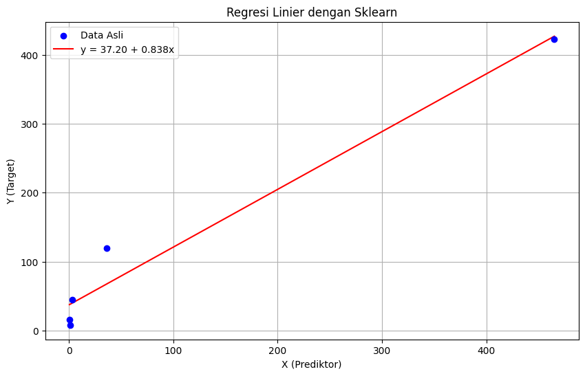

📊 Regresi Linier (Linear Regression)#
1. Apa itu Regresi Linier?#
Regresi Linier adalah metode supervised learning untuk memprediksi nilai kontinu (bukan kategori). Dalam peta machine learning:
Kontinu |
Kategorikal |
|
|---|---|---|
Supervised |
Regression ✅ |
Classification |
Unsupervised |
Dimension Reduction |
Clustering |
Mengapa penting dipelajari?#
Banyak digunakan di industri dan akademik
Komputasi cepat
Mudah digunakan (tidak perlu banyak tuning)
Sangat interpretable (mudah dijelaskan)
Menjadi dasar banyak metode lainnya
2. Model Regresi Linier Sederhana#
Simbol |
Nama |
Keterangan |
|---|---|---|
\(y\) |
Response variable |
Nilai yang ingin diprediksi |
\(x\) |
Input variable |
Variabel prediktor/fitur |
\(\beta_0\) |
Intercept |
Titik potong garis dengan sumbu-y |
\(\beta_1\) |
Regression coefficient |
Kemiringan garis (\(\Delta y / \Delta x\)) |
\(\varepsilon\) |
Residual |
Error / selisih prediksi dengan data asli |
3. Model Regresi Linier Berganda (Multiple)#
Untuk beberapa variabel input:
4. Estimasi Koefisien#
Konsep: Meminimalkan Sum of Squared Residuals (SSR)#
Kita mencari garis yang meminimalkan jumlah kuadrat error antara nilai prediksi \(\hat{y}\) dan nilai aktual \(y\).
Rumus Analitik (Ordinary Least Squares / OLS)#
Di mana:
\(X\) = Matriks fitur (dengan kolom pertama berisi angka 1 sebagai bias/intercept)
\(Y\) = Vektor target / response
\(X^T\) = Transpose dari matriks \(X\)
\((X^T X)^{-1}\) = Invers dari matriks \((X^T X)\)
5. Contoh Perhitungan Manual#
Dataset#
Observasi |
X (Prediktor) |
Y (Target) |
|---|---|---|
1 |
3.385 |
44.5 |
2 |
0.48 |
15.5 |
3 |
1.35 |
8.1 |
4 |
465.0 |
423.0 |
5 |
36.33 |
119.5 |
Langkah 1: Susun Matriks X dan Y#
Kolom pertama berisi angka 1 sebagai placeholder untuk intercept \(\beta_0\).
Langkah 2: Hitung \(X^T X\)#
Langkah 3: Hitung \((X^T X)^{-1}\)#
Invers matriks 2×2: tukar diagonal, bagi dengan determinan.
Langkah 4: Hitung \(X^T Y\)#
Langkah 5: Hitung \(\hat{\beta}\)#
Hasil: \(\hat{y} = 37.201 + 0.838 \cdot x\)
6. Variabel Kategorikal (Dummy Variables)#
Untuk variabel kategorikal dengan \(k\) level, buat \(k-1\) variabel binary (dummy).
Contoh: Variabel Major dengan \(k=4\) (CS, Engineering, Business, Literature)
Major |
Engineering |
Business |
Literature |
|---|---|---|---|
Computer Science |
0 |
0 |
0 |
Engineering |
1 |
0 |
0 |
Business |
0 |
1 |
0 |
Literature |
0 |
0 |
1 |
“Computer Science” menjadi referensi (semua 0). Kenapa \(k-1\)? Untuk menghindari multicollinearity (korelasi sempurna antar prediktor).
Tipe data kategorikal:
Nominal (tidak berurutan): gunakan dummy variables
Ordinal (berurutan, mis. skala Likert): bisa dikodekan sebagai integer 1, 2, 3, 4, 5
7. Code Python#
7.1 Menggunakan Sklearn (LinearRegression)#
import numpy as np
import pandas as pd
from sklearn.linear_model import LinearRegression
import matplotlib.pyplot as plt
# Dataset
X = np.array([3.385, 0.48, 1.35, 465.0, 36.33]).reshape(-1, 1)
Y = np.array([44.5, 15.5, 8.1, 423.0, 119.5])
# Membuat dan melatih model
model = LinearRegression()
model.fit(X, Y)
# Koefisien hasil
print(f"Intercept (β₀): {model.intercept_:.4f}")
print(f"Koefisien (β₁): {model.coef_[0]:.4f}")
# Prediksi
X_pred = np.linspace(min(X), max(X), 100).reshape(-1, 1)
Y_pred = model.predict(X_pred)
# Visualisasi
plt.figure(figsize=(10, 6))
plt.scatter(X, Y, color='blue', label='Data Asli', zorder=5)
plt.plot(X_pred, Y_pred, color='red', label=f'y = {model.intercept_:.2f} + {model.coef_[0]:.3f}x')
plt.xlabel('X (Prediktor)')
plt.ylabel('Y (Target)')
plt.title('Regresi Linier dengan Sklearn')
plt.legend()
plt.grid(True)
plt.show()
Intercept (β₀): 37.2009
Koefisien (β₁): 0.8382

7.2 Perhitungan Analitik OLS (Tanpa Library)#
import numpy as np
# Dataset
X_raw = np.array([3.385, 0.48, 1.35, 465.0, 36.33])
Y = np.array([44.5, 15.5, 8.1, 423.0, 119.5])
# Tambahkan kolom 1 untuk intercept
ones = np.ones((len(X_raw), 1))
X = np.column_stack([ones, X_raw])
print("Matriks X:")
print(X)
# Hitung X^T X
XTX = X.T @ X
print("\nX^T X:")
print(XTX)
# Hitung (X^T X)^-1
XTX_inv = np.linalg.inv(XTX)
print("\n(X^T X)^-1:")
print(XTX_inv)
# Hitung X^T Y
XTY = X.T @ Y
print("\nX^T Y:")
print(XTY)
# Hitung beta = (X^T X)^-1 X^T Y
beta = XTX_inv @ XTY
print("\nKoefisien β:")
print(f" β₀ (intercept) = {beta[0]:.4f}")
print(f" β₁ (slope) = {beta[1]:.4f}")
# Prediksi
Y_hat = X @ beta
print("\nPrediksi vs Aktual:")
for i in range(len(Y)):
print(f" X={X_raw[i]:7.3f} | Y_aktual={Y[i]:6.1f} | Y_prediksi={Y_hat[i]:7.3f} | error={Y[i]-Y_hat[i]:+.3f}")
# Evaluasi: R-squared
SS_res = np.sum((Y - Y_hat) ** 2)
SS_tot = np.sum((Y - np.mean(Y)) ** 2)
R2 = 1 - SS_res / SS_tot
print(f"\nR² Score: {R2:.4f}")
Matriks X:
[[ 1. 3.385]
[ 1. 0.48 ]
[ 1. 1.35 ]
[ 1. 465. ]
[ 1. 36.33 ]]
X^T X:
[[5.0000000e+00 5.0654500e+02]
[5.0654500e+02 2.1755838e+05]]
(X^T X)^-1:
[[ 2.61738831e-01 -6.09411121e-04]
[-6.09411121e-04 6.01537002e-06]]
X^T Y:
[ 610.6 201205.4425]
Koefisien β:
β₀ (intercept) = 37.2009
β₁ (slope) = 0.8382
Prediksi vs Aktual:
X= 3.385 | Y_aktual= 44.5 | Y_prediksi= 40.038 | error=+4.462
X= 0.480 | Y_aktual= 15.5 | Y_prediksi= 37.603 | error=-22.103
X= 1.350 | Y_aktual= 8.1 | Y_prediksi= 38.332 | error=-30.232
X=465.000 | Y_aktual= 423.0 | Y_prediksi=426.973 | error=-3.973
X= 36.330 | Y_aktual= 119.5 | Y_prediksi= 67.653 | error=+51.847
R² Score: 0.9659
7.3 Regresi Linier Berganda (Multiple)#
import numpy as np
from sklearn.linear_model import LinearRegression
from sklearn.model_selection import train_test_split
from sklearn.metrics import mean_squared_error, r2_score
# Contoh dataset dengan 2 prediktor
np.random.seed(42)
n = 100
X1 = np.random.randn(n)
X2 = np.random.randn(n)
Y = 3 + 2*X1 + 5*X2 + np.random.randn(n) * 0.5
X = np.column_stack([X1, X2])
# Split data
X_train, X_test, y_train, y_test = train_test_split(X, Y, test_size=0.2, random_state=42)
# Model
model = LinearRegression()
model.fit(X_train, y_train)
# Evaluasi
y_pred = model.predict(X_test)
print(f"β₀ (intercept): {model.intercept_:.4f}")
print(f"β₁ (X1): {model.coef_[0]:.4f}")
print(f"β₂ (X2): {model.coef_[1]:.4f}")
print(f"MSE: {mean_squared_error(y_test, y_pred):.4f}")
print(f"R² Score: {r2_score(y_test, y_pred):.4f}")
β₀ (intercept): 3.0532
β₁ (X1): 2.0895
β₂ (X2): 5.0136
MSE: 0.1362
R² Score: 0.9940
7.4 Menangani Variabel Kategorikal dengan Pandas#
import pandas as pd
from sklearn.linear_model import LinearRegression
# Dataset dengan kolom kategorikal
data = pd.DataFrame({
'Major': ['CS', 'Engineering', 'Business', 'Literature', 'Business', 'Engineering'],
'GPA': [3.8, 3.5, 3.2, 3.6, 3.0, 3.7],
'Salary': [95000, 88000, 75000, 70000, 72000, 90000]
})
# One-hot encoding (k-1 dummy variables, drop_first=True)
data_encoded = pd.get_dummies(data, columns=['Major'], drop_first=True)
print(data_encoded)
X = data_encoded.drop('Salary', axis=1)
y = data_encoded['Salary']
model = LinearRegression()
model.fit(X, y)
print(f"\nIntercept: {model.intercept_:.2f}")
for name, coef in zip(X.columns, model.coef_):
print(f"{name}: {coef:.2f}")
GPA Salary Major_CS Major_Engineering Major_Literature
0 3.8 95000 True False False
1 3.5 88000 False True False
2 3.2 75000 False False False
3 3.6 70000 False False True
4 3.0 72000 False False False
5 3.7 90000 False True False
Intercept: 34750.00
GPA: 12500.00
Major_CS: 12750.00
Major_Engineering: 9250.00
Major_Literature: -9750.00
8. Visualisasi di GeoGebra#
Link GeoGebra#
🔗 Buka GeoGebra Linear Regression
Atau buat sendiri di: https://www.geogebra.org/classic
Cara Membuat Regresi Linier di GeoGebra Classic#
Langkah 1: Input Data sebagai List#
Masukkan perintah berikut di Input Bar (baris bawah):
# Daftar titik data
X_data = {3.385, 0.48, 1.35, 465, 36.33}
Y_data = {44.5, 15.5, 8.1, 423, 119.5}
Langkah 2: Buat Titik-Titik#
# Buat list titik
titik = Zip((x, y), x, X_data, y, Y_data)
Atau input manual tiap titik:
A = (3.385, 44.5)
B = (0.48, 15.5)
C = (1.35, 8.1)
D = (465, 423)
E = (36.33, 119.5)
Langkah 3: Hitung Garis Regresi Otomatis#
# Regresi linier otomatis dari list titik
garis = FitLine({A, B, C, D, E})
GeoGebra akan menampilkan persamaan garis regresi secara otomatis!
Langkah 4: Formula Manual OLS (opsional, untuk verifikasi)#
Hitung komponen OLS secara manual di GeoGebra:
# Jumlah data
n = 5
# Mean
x_bar = Mean(X_data)
y_bar = Mean(Y_data)
# Komponen regresi
Sxx = Sum(Zip((x - x_bar)^2, x, X_data))
Sxy = Sum(Zip((x - x_bar) * (y - y_bar), x, X_data, y, Y_data))
# Koefisien
beta1 = Sxy / Sxx
beta0 = y_bar - beta1 * x_bar
# Tampilkan persamaan
persamaan = "y = " + beta0 + " + " + beta1 + "x"
Langkah 5: Visualisasi Residual#
# Gambar residual (garis dari titik ke garis regresi)
residual_A = Segment(A, (x(A), beta0 + beta1 * x(A)))
residual_B = Segment(B, (x(B), beta0 + beta1 * x(B)))
residual_C = Segment(C, (x(C), beta0 + beta1 * x(C)))
residual_D = Segment(D, (x(D), beta0 + beta1 * x(D)))
residual_E = Segment(E, (x(E), beta0 + beta1 * x(E)))
Langkah 6: Hitung R² di GeoGebra#
# Y prediksi
Y_hat = Map(beta0 + beta1 * x, X_data)
# SS_residuals dan SS_total
SS_res = Sum(Zip((y - yhat)^2, y, Y_data, yhat, Y_hat))
SS_tot = Sum(Zip((y - y_bar)^2, y, Y_data))
# R-squared
R2 = 1 - SS_res / SS_tot
9. Ringkasan Rumus Penting#
Rumus |
Keterangan |
|---|---|
\(\hat{\beta} = (X^T X)^{-1} X^T Y\) |
OLS estimator koefisien |
\(SS_{res} = \sum (\hat{y}_i - y_i)^2\) |
Sum of Squared Residuals |
\(R^2 = 1 - \frac{SS_{res}}{SS_{tot}}\) |
Koefisien determinasi |
\(\beta_1 = \frac{S_{xy}}{S_{xx}}\) |
Slope (regresi sederhana) |
\(\beta_0 = \bar{y} - \beta_1 \bar{x}\) |
Intercept (regresi sederhana) |
Referensi: Slide Linear Regression — Supervised Learning